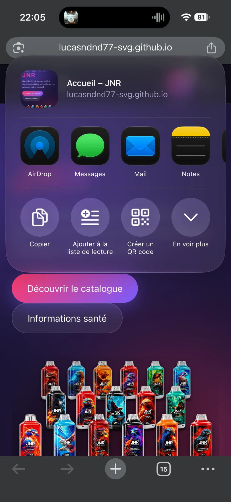
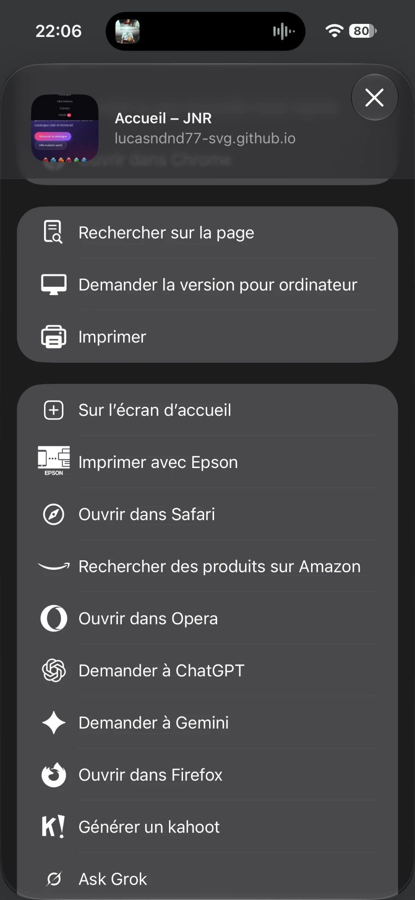
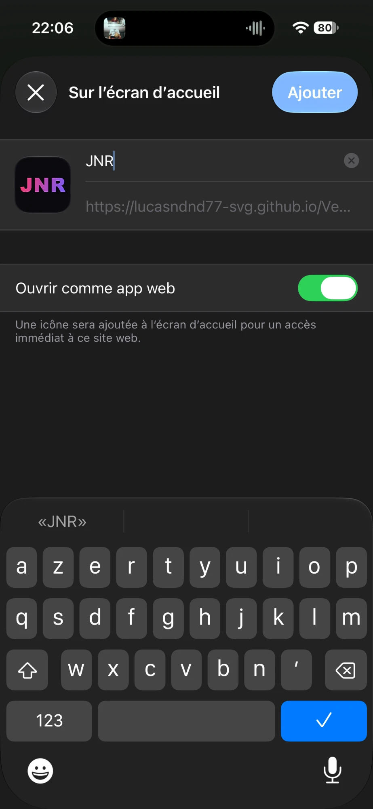

JNR sur votre écran d'accueil
Ajoutez le site comme une appli : il s'ouvre d'un seul geste depuis l'écran d'accueil, en plein écran, et votre code d'accès reste mémorisé. Plus besoin de le retaper à chaque fois.
- 1Appuyez sur « Partager »Dans Safari ou Chrome, ouvrez le site JNR puis touchez l'icône Partager ⬆︎ (le carré avec une flèche vers le haut), à côté de l'adresse du site. Sur certains iPhone elle est en bas de l'écran, ou dans le menu •••.
- 2Touchez « En voir plus »Le menu de partage s'ouvre : touchez ⌄ « En voir plus » pour afficher toutes les options.

- 3Choisissez « Sur l'écran d'accueil »Faites défiler la liste et touchez la ligne avec le logo ⊞ (un carré avec un +).

- 4Laissez « JNR » et touchez « Ajouter »Gardez le nom JNR et l'option « Ouvrir comme app web » activée, puis touchez Ajouter en haut à droite. L'icône JNR apparaît sur votre écran d'accueil.

Sur iPhone, l'appli JNR a sa propre mémoire : à la première ouverture depuis l'icône, saisissez le code d'accès une dernière fois. Ensuite il reste enregistré.
Avec Samsung Internet
- 1Ouvrez le menuSur le site JNR, touchez le menu ☰ (trois traits) en bas à droite de l'écran.
- 2Touchez « Ajouter la page à »Puis choisissez Écran d'accueil.
- 3Confirmez avec « Ajouter »L'icône JNR apparaît sur votre écran d'accueil.
Avec Google Chrome
- 1Ouvrez le menuSur le site JNR, touchez les trois points ⋮ en haut à droite.
- 2Touchez « Ajouter à l'écran d'accueil »Selon la version, l'option peut s'appeler « Installer l'application ».
- 3Confirmez avec « Ajouter » ou « Installer »L'icône JNR apparaît sur votre écran d'accueil.
Les noms des boutons peuvent changer un peu selon le téléphone et la version, mais le chemin reste le même : menu, puis « écran d'accueil ».